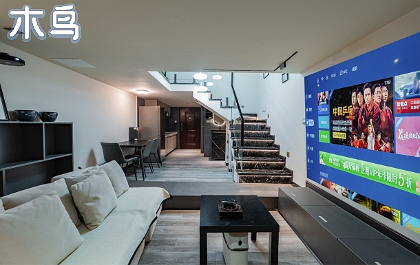

CHENGDU SIDE QUEST / 成都冒险手册 VOL.01
★ 11.11—11.15 / FOUR FRIENDS
成都
耍起来！
看熊猫 · 逛老街 · 吃到冒烟
再一起，等一场凌晨的决赛。
出发！翻开这趟冒险 ↗SPECIAL MISSION03:00决赛之夜 / 11.15
ILLUSTRATED CITY FANTASY · 非实景地图
CHENGDU! 熊猫出没 ✦ HOT POT! ✦ 慢慢耍 ✦ CITY QUEST ✦ 朋友集合 ✦CHENGDU! 熊猫出没 ✦ HOT POT! ✦ 慢慢耍 ✦ CITY QUEST ✦ 朋友集合 ✦
MISSION BRIEFING / 任务简报
五天的成都副本，
一起组队通关。
从春熙路的城市日常，走到文殊院的老街茶香；去草堂读一段诗，在火锅旁坐久一点。最后，把 11 月 15 日凌晨留给一起看的那场决赛。
这份行程以春熙路附近住宿为起点，按街区顺路安排。首尾两天留有余量，11 月 14 日下午回住处补觉，为凌晨观赛留足精力。
05DAYS / 五日
04FRIENDS / 四人
03:00FINAL / 待确认场次
行程已纠正：金沙遗址博物馆官方公告：2025.12.05—2027.04.30闭馆。本次11.14改为成都博物馆与宽窄巷子。
查看官方公告 ↗ 每日冒险，逐站解锁。
01 — THE ITINERARY核心打卡地，先看实景。
PHOTO QUEST / 07 CHECKPOINTS点击照片放大；不同拍摄日期的实景参考，不代表出行当日天气或现场状态。
爬墙熊猫，地面与7楼两个视角。
图片来源 ↗太古里：灰瓦与现代高楼同框。
图片来源 ↗熊猫基地：慢慢看进食与活动。
图片来源 ↗鹤鸣茶社：给盖碗茶留一小时。
图片来源 ↗草堂茅屋景区：竹林里读一首诗。
图片来源 ↗武侯祠：红墙夹道与竹影。
图片来源 ↗宽窄巷子：院落、门头与石板路。
图片来源 ↗肚子饿了？先开一局火锅。
02 — AT THE TABLESICHUAN HOT POT / 四川火锅品类示意洞子口张老二凉粉
DAY 02文殊院店。甜水面与凉粉适合四人分食，先各点两份，再按胃口加餐；吃完步行逛文殊院。
文殊院片区 ↗鲜知味钵钵鸡
DAY 03草堂北路店。草堂游览后的午餐选择，红油或藤椒按口味选，四人荤素搭配、少量多次取餐。
草堂片区 ↗如在蜀毛肚老火锅
DAY 03玉林店。推荐毛肚、鲜切肉配蔬菜；四个人可选鸳鸯锅，能吃辣的与偏清淡的都方便。
玉林片区 ↗冒椒火辣
DAY 04奎星楼街店，参考地址奎星楼街 33 号。成都博物馆结束后到这里吃冷锅串串，饭后顺路去宽窄巷子。
奎星楼街片区 ↗营业、分店位置及价格请到店前核实；热门店预留排队时间。
冒险者的回血据点。
03 — WHERE TO STAY以下为可核对的四人整租候选。金额是房东主页或详情页展示价，并非已选 11.11—11.15 的可订总价；清洁费、押金、周末价和房态需点进平台确认。昭觉寺南路与动物园片区不在春熙路步行范围内，行程车程要从实际住处重算。
BUDGET 01 / 四人分摊套二 · 三空调可做饭
¥190 /套/晚·展示价
木鸟房号 810084，西林一街／金科星耀天都片区；2室、2张双人床、宜住4人、约43㎡、1卫。每人约¥47.5，四晚按展示价乘算¥760。
适合两人一床。页面标题与描述存在床型表述差异，预订前确认实际卧室和门锁布局。
查看这套民宿 ↗BUDGET 02 / 投影LOFT两居 · 璟宸世家
¥220 /套/晚·详情展示价
木鸟房号 908882，动物园站附近；2室、2床、宜住4人、约60㎡、1卫。每人约¥55，四晚乘算¥880。
房东介绍为楼上两间卧室，复式内有楼梯。列表显示¥140而详情显示¥220，此处按详情页记，具体日期价格未核验。
查看这套民宿 ↗BUDGET 03 / 双卫候选星耀天都 · 复式两居
¥178 /套/晚·主页展示价
木鸟房号 1001378，昭觉寺南路50号；2室、2张双人床、宜住4人、约48㎡。每人约¥44.5，四晚乘算¥712。
标题及设施写2卫，正文户型又写1卫，信息冲突需向房东核实；未核实前不把“双卫”当保证。
查看这套民宿 ↗ 
REAL LISTING / 房源参考图便宜之外，睡好也很重要。
四位若能接受两人同床，优先两卧室两张双人床。若要4张独立床，应重新筛选四床房型；这些候选都不满足四人各睡一床。
11.15凌晨看完决赛后，确认能否延迟退房、是否需加订一晚。复式楼梯、实际卫浴数、整套门锁、床品清洁和额外收费都要确认。
照片及详情来源 ↗ 04 — ONE LAST NIGHT最终任务。
全员集合！
03:00
15 NOV / BEIJING TIME 按媒体报道的开赛时间预留行程。成都影院的具体场次、成团与直播安排尚未确认，购票后再以实际门店调整交通和出发时间。
14 NOV
16:00回酒店补觉。晚饭清淡，确认影院夜间入口、四连座、是否成团以及退票规则。
15 NOV
02:00根据距离预约网约车，以 02:30 前抵达为目标。备外套与充电宝，预留夜间找入口的时间。
AFTER
THE FINAL比赛时长不确定。结束后打车回酒店补眠，避免衔接早班航班或火车；若没有合适影院，确认官方直播渠道及酒店网络。
场次请查猫眼、淘票票或影院官方渠道。原赛程报道 ↗
预订、预算与资料来源 / FIELD NOTES
熊猫基地原核对信息：成人票 ¥55，冬季 08:00 开园、16:30 停止入园、17:30 闭园，需实名预约。出发前以官方公告为准；草堂、武侯祠与成都博物馆提前查看当日预约要求；金沙闭馆，本行程不前往。
四人预算估算：平价民宿住宿预算建议 ¥800–1,600/四晚/整套（含预留波动，非报价），餐饮 ¥1,600–2,800，市内交通 ¥400–800；景点、观赛及往返大交通另计。车程均为规划估算，按实时导航调整。
行程本次路线、开放与住宿资料补查于 2026.11.06；未核实出行日期房态。美食参考街区美食整理及门店资料；未直接核验小红书笔记，不作为实时榜单。
摄影来源：武侯祠红墙竹影、熊猫基地、太古里、四川火锅。火锅图为品类示意，并非推荐餐厅的菜品实拍。